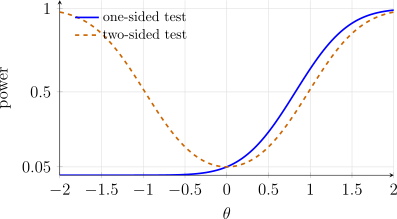

3.3 Uniformly Most Powerful Tests
Most alternatives of interest are composite, for example \(H_1\colon \theta >\theta _0\). A test is then judged by its whole power function on \(\Omega _1\).
Definition 3.3.1. A test with critical region \(R^*\) is a uniformly most powerful (UMP) test of size \(\alpha \) of \(H_0\colon \theta \in \Omega _0\) against \(H_1\colon \theta \in \Omega _1\) if
- (i)
- \(\sup _{\theta \in \Omega _0} P_\theta (X\in R^*) = \alpha \), and
- (ii)
- \(P_\theta (X\in R^*)\ge P_\theta (X\in R)\) for every \(\theta \in \Omega _1\) and every critical region \(R\) of level \(\alpha \).
So a UMP test is most powerful against every single alternative at once. The way to find one is to fix an arbitrary \(\theta _1\in \Omega _1\), construct the MP test of \(\theta _0\) against \(\theta _1\), and see whether the critical region depends on \(\theta _1\). If it does not, the region is MP for every \(\theta _1\), hence UMP.
Example 3.3.2. Let \(X_1,\dots ,X_n\) be a random sample from \(N(\theta ,1)\).
- (a)
- Find the MP test of size \(0.05\) of \(H_0\colon \theta = 0\) against \(H_1\colon \theta = \theta _1\), where \(\theta _1>0\).
- (b)
- Find the UMP test of size \(0.05\) of \(H_0\colon \theta = 0\) against \(H_1\colon \theta >0\).
- (c)
- Find and sketch its power function.
Solution.
- (a)
- The likelihood ratio is \[\frac {L(\theta _1;x)}{L(0;x)} = \exp \left (\frac 12\sum x_i^2 - \frac 12\sum (x_i - \theta _1)^2\right ) = \exp \left (\theta _1\sum x_i - \frac {n\theta _1^2}{2}\right ).\] Since \(\theta _1>0\) this increases in \(\bar x\), so \(R = \{x : \bar x>c\}\). Under \(H_0\), \(\bar X\sim N(0,\frac 1n)\), and \(P_0(\bar X>c) = P(Z>c\sqrt n) = 0.05\) gives \(c = \frac {1.645}{\sqrt n}\). The MP test rejects \(H_0\) if \(\bar x>\frac {1.645}{\sqrt n}\).
- (b)
- The region found in (a) used only the sign of \(\theta _1\), not its value. The same region is therefore MP against every \(\theta _1>0\), and the test that rejects when \(\bar x>\frac {1.645}{\sqrt n}\) is UMP of size \(0.05\) for \(H_1\colon \theta >0\).
- (c)
- Since \(\bar X\sim N(\theta ,\frac 1n)\), \[\pi (\theta ) = P_\theta \left (\bar X>\frac {1.645}{\sqrt n}\right ) = P\left (Z>1.645 - \theta \sqrt n\right ) = 1 - \Phi (1.645 - \theta \sqrt n).\] It equals \(0.05\) at \(\theta = 0\), increases with \(\theta \), tends to \(1\) as \(\theta \to \infty \) and to \(0\) as \(\theta \to -\infty \). For \(n = 4\): \(\pi (0.25) = 0.126\), \(\pi (0.5) = 0.260\), \(\pi (1) = 0.639\). The curve is the solid one in figure 3.3.
Example 3.3.3. Let \(X_1,\dots ,X_{20}\) be a random sample from \(N(0,\sigma ^2)\).
- (a)
- Derive the UMP test of size \(0.05\) of \(H_0\colon \sigma = \sigma _0\) against \(H_1\colon \sigma <\sigma _0\).
- (b)
- Find its power function and describe its shape.
Solution.
- (a)
- Example 3.2.6 with \(\mu = 0\) and \(n = 20\) shows that for any \(\sigma _1<\sigma _0\) the MP test rejects when \(\sum x_i^2<c\) with \(c = \sigma _0^2\chi ^2_{20,0.95} = 10.851\,\sigma _0^2\). The region depends only on \(\sigma _0\), not on \(\sigma _1\), so it is UMP against \(H_1\colon \sigma <\sigma _0\): reject \(H_0\) if \(\sum _{i=1}^{20} x_i^2<10.851\,\sigma _0^2\).
- (b)
- For any \(\sigma \), \(\sum \left (\frac {X_i}{\sigma }\right )^2\sim \chi ^2(20)\), so \[\pi (\sigma ) = P_\sigma \left (\sum X_i^2<10.851\,\sigma _0^2\right ) = P\left (\chi ^2(20)<10.851\,\frac {\sigma _0^2}{\sigma ^2}\right ).\] At \(\sigma = \sigma _0\) this is \(0.05\). As \(\sigma \) decreases the ratio \(\frac {\sigma _0^2}{\sigma ^2}\) grows and so does the power; for example \(\pi (0.8\sigma _0) = P(\chi ^2(20)<16.95) = 0.344\) and \(\pi (0.5\sigma _0) = P(\chi ^2(20)<43.40) = 0.998\). For \(\sigma >\sigma _0\) the power falls below \(0.05\), for instance \(\pi (1.2\sigma _0) = 0.005\). The power function decreases in \(\sigma \) from \(1\) near \(\sigma = 0\) towards \(0\).
A UMP test need not exist, and for two-sided alternatives it usually does not.
Example 3.3.4. Let \(X_1,\dots ,X_n\) be a random sample from \(N(\theta ,1)\). To test \(H_0\colon \theta = 0\) against \(H_1\colon \theta \ne 0\) consider the critical region \(R = \left \{x : |\bar x|>\frac {1.96}{\sqrt n}\right \}\).
- (a)
- Find its power function.
- (b)
- Is the test uniformly most powerful?
Solution.
- (a)
- Since \(\sqrt n(\bar X - \theta )\sim N(0,1)\), \[\pi (\theta ) = P_\theta \left (\bar X>\frac {1.96}{\sqrt n}\right ) + P_\theta \left (\bar X<-\frac {1.96}{\sqrt n}\right ) = 1 - \Phi (1.96 - \theta \sqrt n) + \Phi (-1.96 - \theta \sqrt n).\] It is symmetric in \(\theta \), equals \(0.05\) at \(\theta = 0\), and increases with \(|\theta |\). For \(n = 1\), \(\pi (\pm 1) = 0.1685 + 0.0015 = 0.170\).
- (b)
- By example 3.3.2, the MP test of size \(0.05\) against any \(\theta _1>0\) rejects when \(\bar x>\frac {1.645}{\sqrt n}\), and by the same argument with the inequality reversed the MP test against any \(\theta _1<0\) rejects when \(\bar x<-\frac {1.645}{\sqrt n}\). A UMP test would have to be most powerful against both kinds of alternative, so it would have to coincide with both one-sided tests, which is impossible. Concretely, at \(\theta = 1\) with \(n = 1\) the one-sided test has power \(1 - \Phi (0.645) = 0.259\), more than the \(0.170\) of the two-sided test; at \(\theta = -1\) the one-sided test has power \(0.004\). No test of size \(0.05\) is UMP for \(H_1\colon \theta \ne 0\); the two-sided test is a sensible compromise, and it is UMP among unbiased tests, those with \(\pi (\theta )\ge \alpha \) for all \(\theta \in \Omega _1\).

Monotone likelihood ratio
The examples above share a structure that makes a UMP test exist for one-sided hypotheses.
Definition 3.3.5. A family of joint densities \(f(x;\theta )\), \(\theta \in \Omega \subset \mathbb {R}\), has a monotone likelihood ratio (MLR) in the statistic \(T = t(X)\) if for every \(\theta _1<\theta _2\) the ratio \[\frac {f(x;\theta _2)}{f(x;\theta _1)}\] depends on \(x\) only through \(t(x)\) and is a nondecreasing function of \(t(x)\).
If the ratio is nonincreasing in \(t(x)\) instead, the family has MLR in \(-T\), so the definition covers both directions.
Theorem 3.3.6 (Karlin–Rubin). Suppose the family \(f(x;\theta )\) has MLR in \(T = t(X)\), and let \(c\) satisfy \(P_{\theta _0}(T\ge c) = \alpha \). Then the test that rejects \(H_0\) when \(t(x)\ge c\) is a UMP test of size \(\alpha \) of \(H_0\colon \theta \le \theta _0\) against \(H_1\colon \theta >\theta _0\) (and also of \(H_0\colon \theta = \theta _0\) against \(H_1\colon \theta >\theta _0\)).
Proof. Fix \(\theta _1>\theta _0\). By MLR, \(\frac {f(x;\theta _1)}{f(x;\theta _0)} = g(t(x))\) with \(g\) nondecreasing. Let \(k = g(c)\). If \(g(t(x))>k\) then \(t(x)>c\); conversely a sample with \(t(x)\ge c\) has \(g(t(x))\ge k\). So the region \(\{t(x)\ge c\}\) agrees with the Neyman–Pearson region of lemma 3.2.2 except possibly on the boundary \(\{g = k\}\), which does not affect the argument of its proof (there \(f_1 = k f_0\) and the bound (3.3) holds with equality). Hence \(\{t(x)\ge c\}\) is MP of size \(\alpha \) for \(\theta _0\) against \(\theta _1\). It does not depend on \(\theta _1\), so it is UMP against \(H_1\colon \theta >\theta _0\).
For the composite null \(\theta \le \theta _0\) it remains to show that the size is still \(\alpha \), that is, \(\pi (\theta )\le \alpha \) for \(\theta <\theta _0\). Apply the first part with \(\theta \) in place of \(\theta _0\) and \(\theta _0\) in place of \(\theta _1\): the region \(\{t\ge c\}\) is MP of its own size \(\pi (\theta )\) for \(\theta \) against \(\theta _0\). The trivial test that rejects with probability \(\pi (\theta )\) regardless of the data has the same size and power \(\pi (\theta )\) at \(\theta _0\), so the MP test has \(\pi (\theta _0)\ge \pi (\theta )\), that is, \(\alpha \ge \pi (\theta )\). The same argument shows that \(\pi \) is nondecreasing. □
Remark 3.3.7. The other one-sided cases follow by symmetry.
- 1.
- If the MLR is nondecreasing in \(t(x)\), the UMP test of \(H_0\colon \theta \ge \theta _0\) against \(H_1\colon \theta <\theta _0\) rejects when \(t(x)\le c\).
- 2.
- If the MLR is nonincreasing in \(t(x)\), the UMP test of \(H_0\colon \theta \le \theta _0\) against \(H_1\colon \theta >\theta _0\) rejects when \(t(x)\le c\), and the test against \(\theta <\theta _0\) rejects when \(t(x)\ge c\).
Corollary 3.3.8. Suppose \(f(x;\theta ) = c(\theta )h(x)\exp (w(\theta )u(x))\) is a one-parameter exponential family with \(w\) increasing. Then the joint density of a random sample has MLR in \(T = \sum _{i=1}^n u(X_i)\).
Proof. For \(\theta _1<\theta _2\), \[\frac {\prod f(x_i;\theta _2)}{\prod f(x_i;\theta _1)} = \left (\frac {c(\theta _2)}{c(\theta _1)}\right )^n \exp \left ([w(\theta _2) - w(\theta _1)]\sum u(x_i)\right ),\] which depends on \(x\) through \(\sum u(x_i)\) and is increasing in it because \(w(\theta _2)>w(\theta _1)\). □
Example 3.3.9. Let \(X_1,\dots ,X_n\) be a random sample from \(f(x;\theta ) = \theta ^x(1-\theta )^{1-x}\), \(x = 0,1\), \(0<\theta <1\). Find a UMP test of size \(\alpha \) of \(H_0\colon \theta \le \theta _0\) against \(H_1\colon \theta >\theta _0\). For \(n = 20\) and \(\theta _0 = 0.2\), find a test of level \(0.05\), its actual size, and its power at \(\theta = 0.4\).
Solution. With \(y = \sum x_i\), the joint probability function is \(\theta ^y(1-\theta )^{n-y}\), and for \(\theta _1<\theta _2\) \[\frac {\theta _2^y(1-\theta _2)^{n-y}}{\theta _1^y(1-\theta _1)^{n-y}} = \left (\frac {\theta _2(1-\theta _1)}{\theta _1(1-\theta _2)}\right )^y \left (\frac {1-\theta _2}{1-\theta _1}\right )^n .\] Since \(\theta _2>\theta _1\) and \(1-\theta _1>1-\theta _2\), the base \(\frac {\theta _2(1-\theta _1)}{\theta _1(1-\theta _2)}\) exceeds \(1\), so the ratio is increasing in \(y\): the family has MLR in \(Y = \sum X_i\). (Equivalently, the Bernoulli is an exponential family with \(w(\theta ) = \ln \frac {\theta }{1-\theta }\), which is increasing.) By theorem 3.3.6 the UMP test rejects \(H_0\) when \(y\ge k\), where \(Y\sim \text {BIN}(n,\theta _0)\) and \[P_{\theta _0}(Y\ge k) = \sum _{y=k}^n\binom ny\theta _0^y(1-\theta _0)^{n-y} = \alpha ,\] with randomisation at \(y = k-1\) if no integer \(k\) gives exactly \(\alpha \).
For \(n = 20\) and \(\theta _0 = 0.2\), the upper tail probabilities are \(P(Y\ge 7) = 0.0867\) and \(P(Y\ge 8) = 0.0321\). The non-randomised test of level \(0.05\) rejects when \(y\ge 8\); its actual size is \(0.032\). Its power function is \(\pi (\theta ) = P_\theta (Y\ge 8)\), which increases from \(\pi (0.2) = 0.032\) to \(\pi (0.4) = 0.584\) and on to \(1\) as \(\theta \to 1\).
Example 3.3.10. Let \(X_1,\dots ,X_n\) be a random sample from \(f(x;\theta ) = \frac 1\theta e^{-x/\theta }\), \(x>0\). Find a UMP test of size \(\alpha \) of \(H_0\colon \theta \ge \theta _0\) against \(H_1\colon \theta <\theta _0\), and its power function.
Solution. For \(\theta _1<\theta _2\), \[\frac {f(x;\theta _2)}{f(x;\theta _1)} = \frac {\theta _2^{-n}e^{-\sum x_i/\theta _2}}{\theta _1^{-n}e^{-\sum x_i/\theta _1}} = \left (\frac {\theta _1}{\theta _2}\right )^n \exp \left (\left [\frac {1}{\theta _1} - \frac {1}{\theta _2}\right ]\sum x_i\right ),\] and the bracket is positive, so the family has a nondecreasing MLR in \(T = \sum X_i\). By remark 3.3.7(1) the UMP test of \(H_0\colon \theta \ge \theta _0\) against \(H_1\colon \theta <\theta _0\) rejects when \(\sum x_i\le c\). As in example 3.2.7, \(\frac {2T}{\theta }\sim \chi ^2(2n)\), so \[c = \frac {\theta _0}{2}\,\chi ^2_{2n,1-\alpha },\qquad \pi (\theta ) = P_\theta (T\le c) = P\left (\chi ^2(2n)\le \frac {\theta _0}{\theta }\,\chi ^2_{2n,1-\alpha }\right ).\] The power is \(\alpha \) at \(\theta = \theta _0\), below \(\alpha \) for \(\theta >\theta _0\), and rises to \(1\) as \(\theta \to 0\). For \(n = 10\), \(\theta _0 = 2\) and \(\alpha = 0.05\) the test rejects when \(\sum x_i\le 10.85\) and, as computed in example 3.2.7, \(\pi (1) = 0.643\).
Example 3.3.11. Let \(X_1,\dots ,X_{10}\) be a random sample from the Poisson distribution with mean \(\lambda \). Find a UMP test of level \(0.05\) of \(H_0\colon \lambda \le 1\) against \(H_1\colon \lambda >1\), its size, and its power at \(\lambda = 1.5\).
Solution. The Poisson probability function is \(e^{-\lambda }\frac {1}{x!}\exp (x\ln \lambda )\), an exponential family with \(w(\lambda ) = \ln \lambda \) increasing. By corollary 3.3.8 and theorem 3.3.6 the UMP test rejects when \(Y = \sum X_i\ge k\). Under \(\lambda = 1\), \(Y\sim \) Poisson\((10)\) (example 1.3.16), with \(P(Y\ge 15) = 0.0835\) and \(P(Y\ge 16) = 0.0487\). So the test rejects \(H_0\) when \(\sum x_i\ge 16\); its size is \(0.049\). At \(\lambda = 1.5\), \(Y\sim \) Poisson\((15)\) and the power is \(P(Y\ge 16) = 0.432\).
Questions on this section
Stuck on something here? Ask below and it stays attached to this topic.